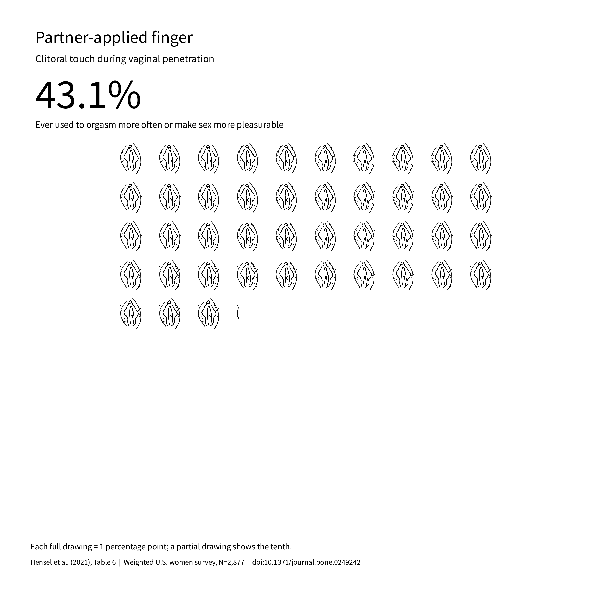
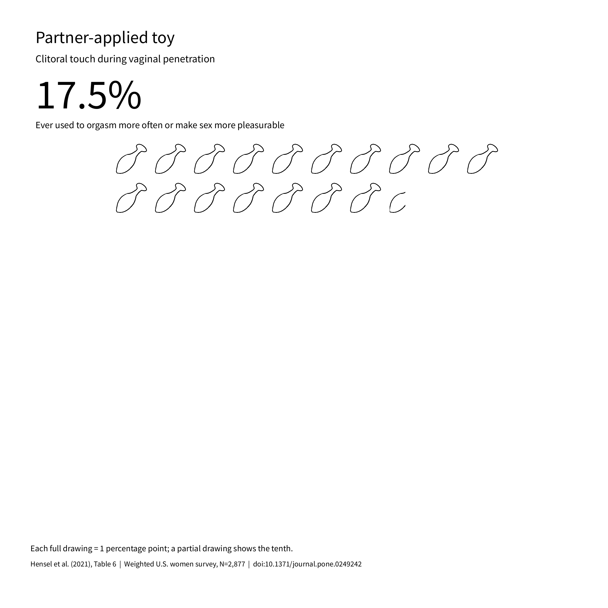
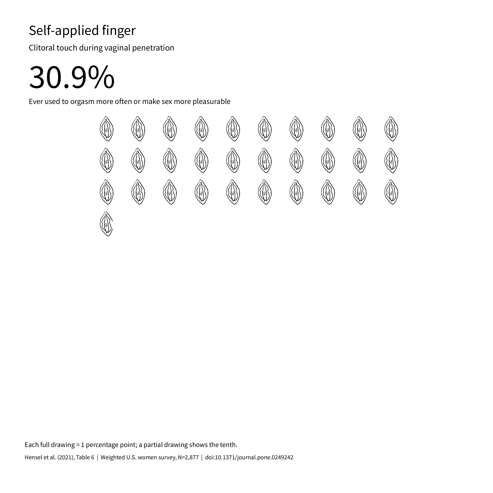
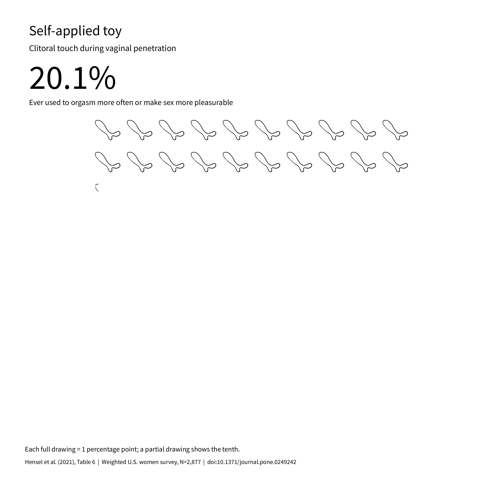

Pairing: repeated illustrations — run-20261106-145301
Four overlapping technique-use percentages during penetration. These are not observed orgasm rates.
5 images · Experiment notes · Source note









Four overlapping technique-use percentages during penetration. These are not observed orgasm rates.
5 images · Experiment notes · Source note



